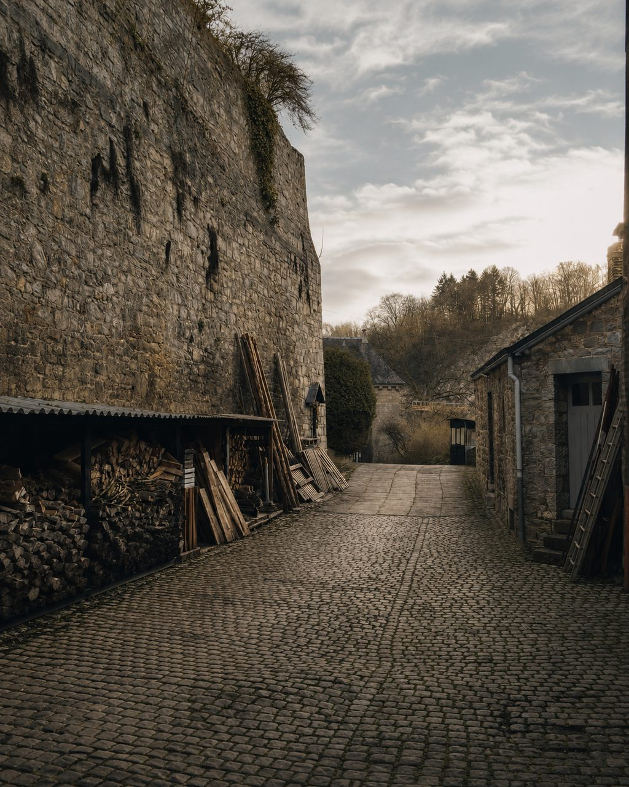
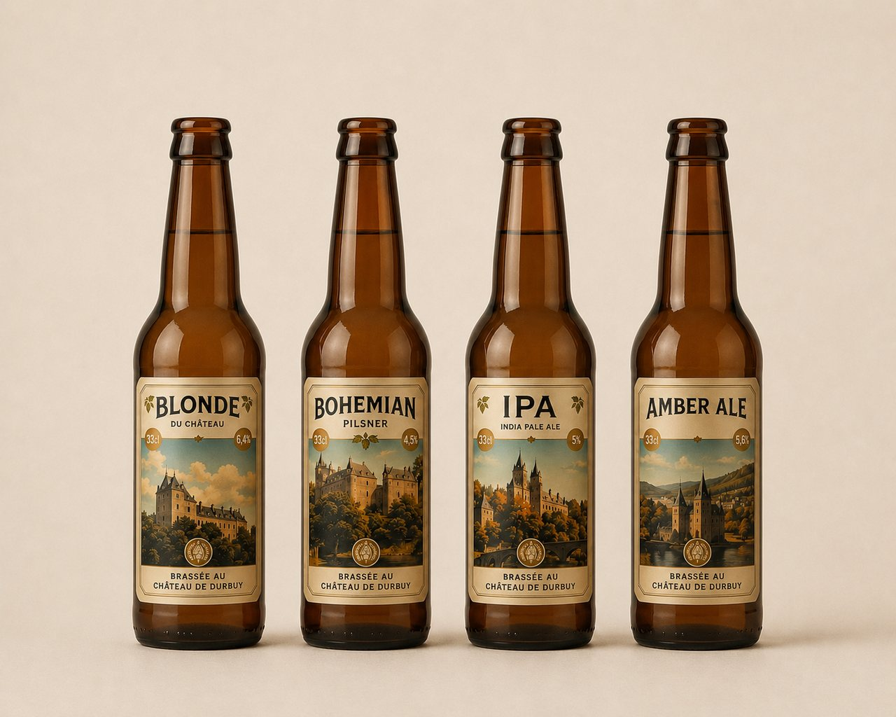
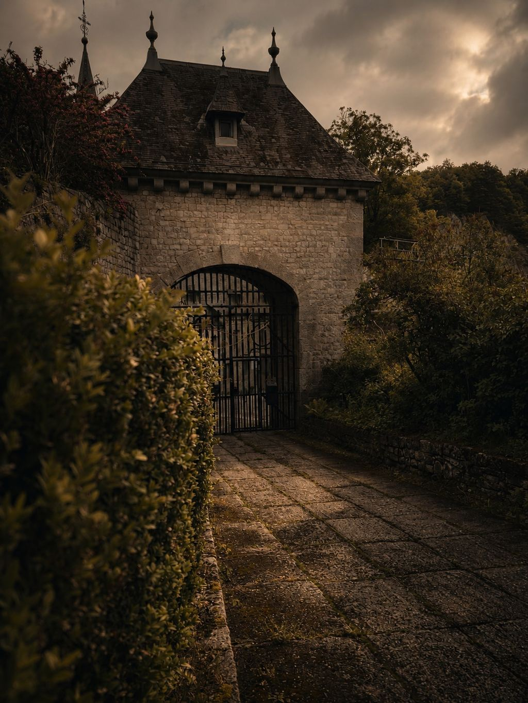

Établissements Dispas
Route de Bomal 42/A6940 Barvaux-sur-Ourthe
Durbuy · Belgium
At the pace of the domain. Tradition, precision, and restraint.
— Chapter I —
The estate comes before the beer
Before the beer comes the domain.
Stone. River. The former stables of the château.
An estate with its own tempo. The brewery follows it, without disturbing it.

— Chapter II —
Traditional fermentation
Set within the estate's former stables, the brasserie makes four traditionally fermented beers in small batches.
Brewing in Durbuy is documented from the 16th century. The name Philippe Marckloff keeps a discreet trace of it; the estate has been in the care of the d'Ursel family since 1628.

At the heart of the estate. At the pace of the domain.
— Chapter III —
Four. Brewed in the estate’s former stables.
Each in its own time. Small batches, traditional fermentation.

After brewing, the beers reach a few local partners.
— Journal —
A few fragments on the place, the brewing, and local memory.
Between pleasure and excess, a warning cannot carry everything a craft must hold.
3 June 2026What an old plant still changes in a beer.
26 May 2026As I prepare the next brew, a small absence touches an older, harsher memory.
— Chapter IV —
Local partners
A few local partners receive our beers. Local should stay simple.
For private or trade enquiries, write to the estate directly. Each enquiry is handled individually.

— Chapter V —
By appointment
Brewery visits are by appointment only, for groups of 10 or more.
The château is a private residence and cannot be visited.
The brewery, the tanks, and the process of a brew day will all be explained.
A tasting on site, according to the beers on hand.
Brasserie du Château de Durbuy is located at Rue du Comte Théodule d'Ursel 2, 6940 Durbuy, Belgium, in the former stables of the Château de Durbuy estate.
Brewery visits are in preparation and are by appointment only, for groups of 10 or more. The château is a private residence and cannot be visited.
The brewery does not publish public opening hours. Enquiries should be sent directly to info@brasseriechateaudurbuy.be.
The brewery is located on the Château de Durbuy estate, in the former stables. The château itself remains private.
Philippe Marckloff belongs to the brewing history of Durbuy, documented around 1560. The reference places a local brewing memory; it is not evidence of continuous brewing at the château since that date.
A few local partners receive the brewery’s beers. For private or trade enquiries, write to the estate directly.